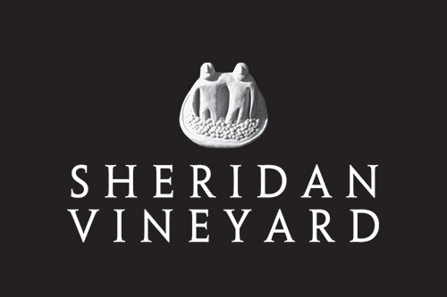

Sheridan Vineyards

If you’re spending time wine tasting in Zillah and don’t stop at Sheridan Vineyard & Winery, you’re missing one of the anchors of the Yakima Valley wine scene. Sheridan isn’t flashy, trendy, or trying to reinvent wine for social media—it’s confident, established, and very comfortable letting the wine do the talking. Which, as it turns out, is a smart strategy when the wine is this good.
Sheridan is known for big, bold reds that feel right at home in this part of Washington. These are wines with structure, depth, and enough personality to stand up to a long dinner or a slightly overconfident food pairing. Nothing here feels rushed or gimmicky. It’s clear the focus is on craftsmanship, patience, and doing things the right way—even if that means letting trends pass by while they quietly keep producing excellent bottles.
The tasting room experience matches the wine: relaxed, welcoming, and refreshingly free of pretension. You don’t need a cheat sheet or a sommelier certification to enjoy yourself here. You just need a glass, a little time, and maybe a willingness to admit you’re enjoying something very good without overthinking it. It’s the kind of place where conversations slow down, pours feel generous, and no one is rushing you along.
Sheridan Vineyard & Winery is a cornerstone of Zillah wine tasting for a reason. It’s consistent, confident, and unapologetically focused on quality. Come for the wine, stay for the calm, and leave with at least one bottle you’ll be irrationally proud to open later and say, “Yeah, this is from Zillah.”
How far from the house: 3 miles